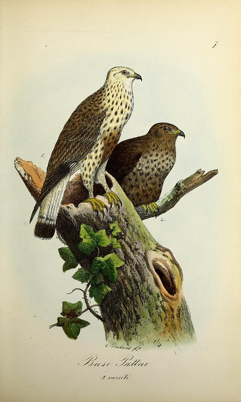
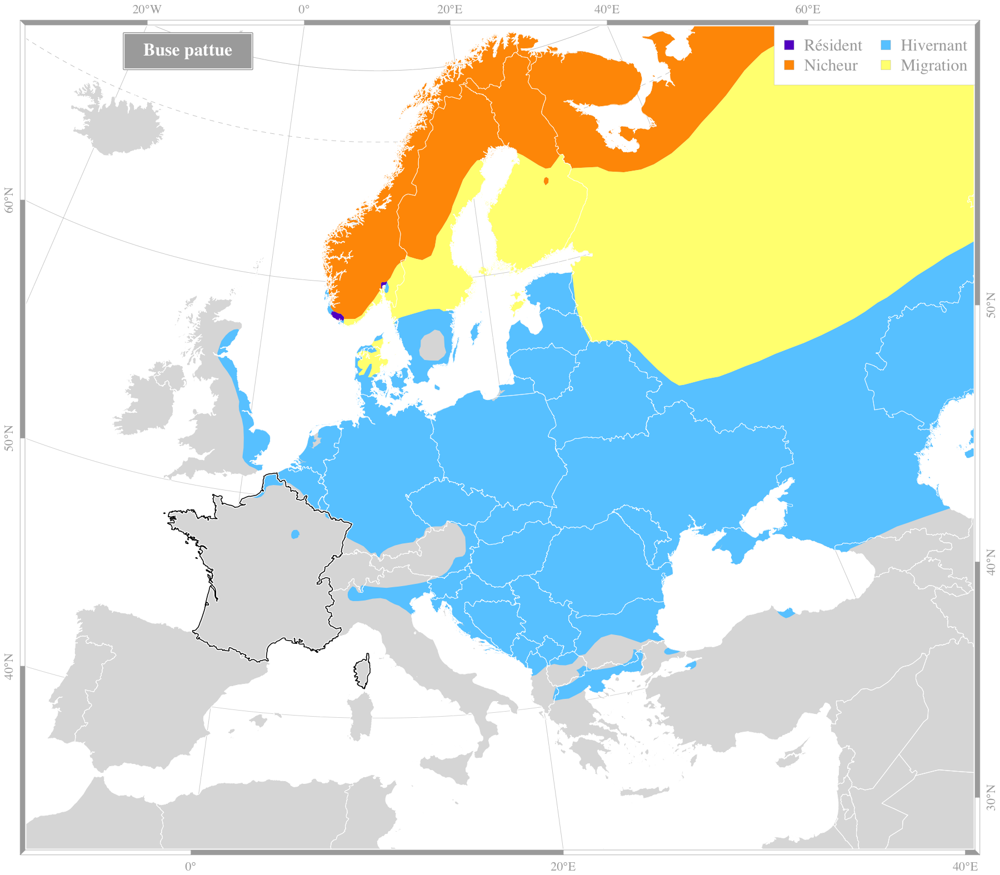

|  Crédit : biodivlibrary |
Buse pattueButeo lagopus (Pontoppidan, 1763)Ordre : Accipitriformes - Famille : Accipitridae
Envergure : 130-150 cm Longueur : 55-61 cm Alimentation : petits rongeurs, oiseaux Habitat : campagnes cultivées, grandes prairies, zones naturelles dégagées |
|||||
Répartition en France
Espèce migratrice : oui |

Source des données : Bird Life International |